Գյուղ, որտեղ ծնվել է հայ մեծ բանաստեղծ Վահան Տերյանը և որտեղից սկսվել է նրա ստեղծագործական ճանապարհը։
Տերյանի ծնունդ
Տարիների պատմություն
Մշակութային կենտրոն
Գանձան Ջավախքի պատմական հայկական բնակավայրերից է։ Այն հայտնի է իր հարուստ մշակույթով, ավանդույթներով և բնական գեղեցկությամբ։
Գյուղում պահպանվել են հայկական լեզուն, ազգային սովորույթները և հոգևոր արժեքները։
Գանձայի առանձնահատուկ նշանակությունը կապված է Վահան Տերյանի ծննդյան հետ։
Այս վայրի բնությունը, լեռները և խաղաղ միջավայրը մեծ ազդեցություն են ունեցել բանաստեղծի աշխարհայացքի վրա։
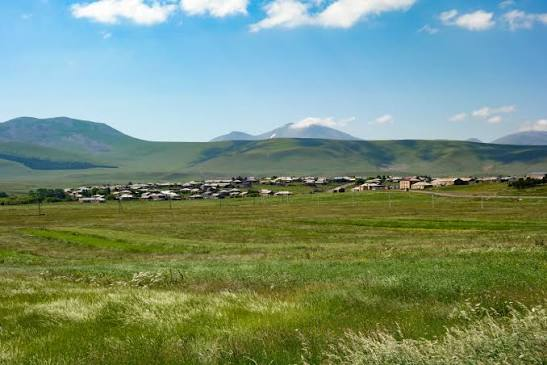
Վահան Տերյանի ծնունդ
Տերյանի կյանքի ավարտ
Տուն-թանգարանի բացում
Մեծ բանաստեղծի ծննդավայր
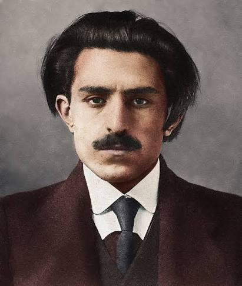
Վահան Տերյանը (1885-1919) հայ մեծ բանաստեղծ, քնարերգու և հասարակական գործիչ է։
Նրա ստեղծագործությունները առանձնանում են նուրբ զգացմունքայնությամբ, գեղեցիկ լեզվով և խոր փիլիսոփայական մտքերով։
«Մթնշաղի անուրջներ» ժողովածուն հայ գրականության կարևորագույն ստեղծագործություններից է։
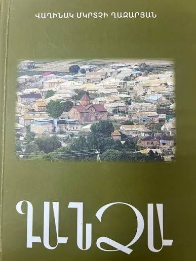
«Գանձա» գիրքը ներկայացնում է գյուղի պատմությունը, մշակութային ժառանգությունը, հայտնի մարդկանց, ավանդույթները և Վահան Տերյանի հետ կապված արժեքավոր տեղեկությունները։
Այն կարևոր աղբյուր է բոլոր նրանց համար, ովքեր ցանկանում են ավելի խորությամբ ճանաչել Գանձայի անցյալն ու ներկան։
Գիրքը միավորում է պատմական փաստերը, հիշողությունները և լուսանկարները՝ պահպանելով գյուղի պատմությունը ապագա սերունդների համար։
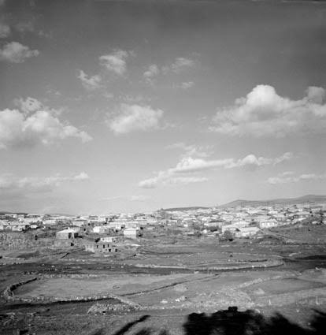
Այստեղ պահպանվում են բանաստեղծի կյանքի, ստեղծագործության և ժամանակաշրջանի մասին արժեքավոր նյութեր։
Գյուղի պատմական հոգևոր կենտրոններից մեկը, որը պահպանել է իր մշակութային նշանակությունը։
Ջավախքի գեղեցիկ լեռները, դաշտերը և բնապատկերները ստեղծում են յուրահատուկ մթնոլորտ։
Գանձա գյուղում ծնվում է ապագա մեծ բանաստեղծը։
Տերյանը մեկնում է ուսումը շարունակելու։
Հրատարակվում է Տերյանի հայտնի ժողովածուն։
Տերյանը դառնում է հայ գրականության ամենասիրված հեղինակներից մեկը։
Ավարտվում է մեծ բանաստեղծի կյանքը։
Գանձայում բացվում է Վահան Տերյանի տուն-թանգարանը։
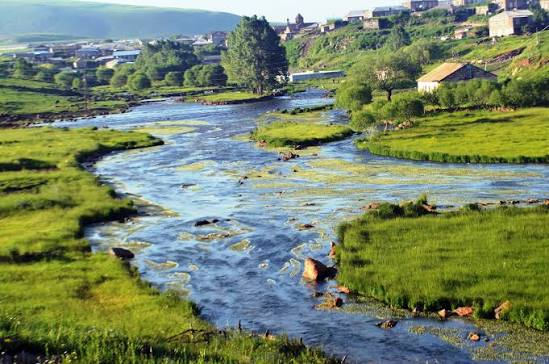
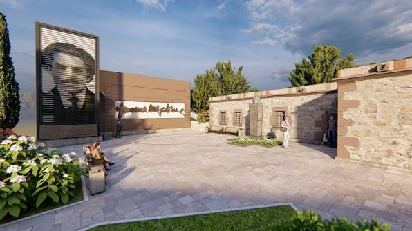
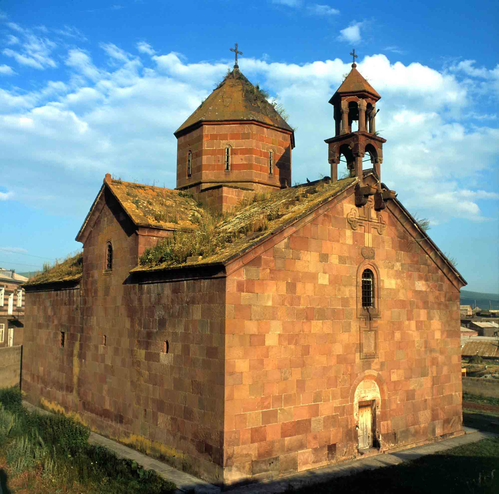
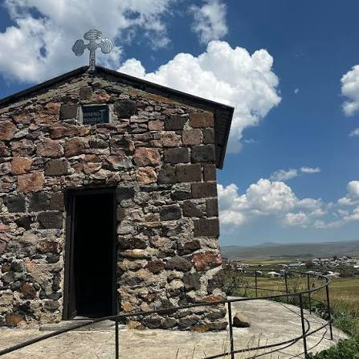
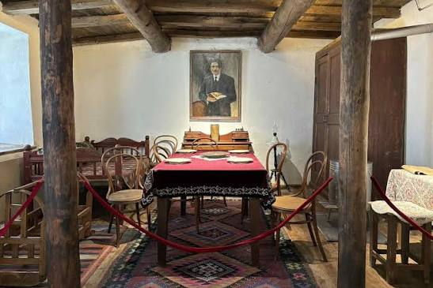
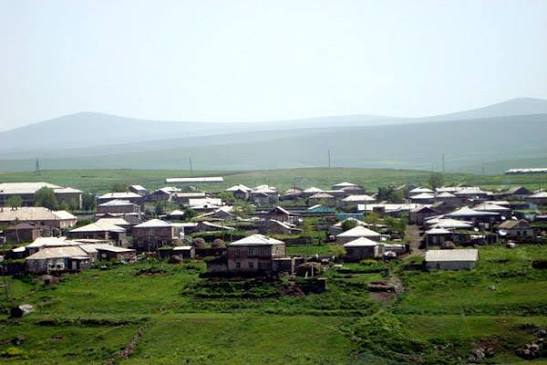
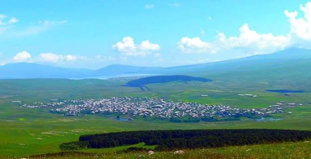
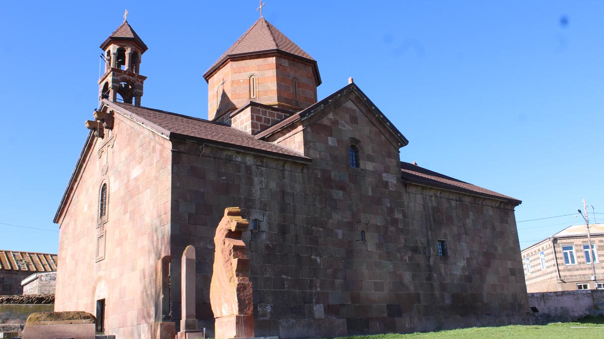
— Վահան Տերյան